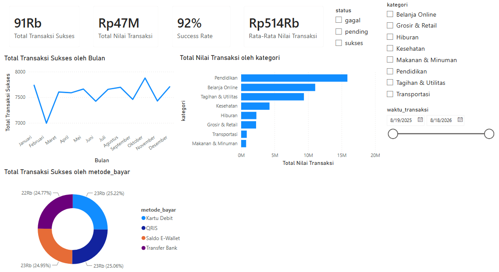
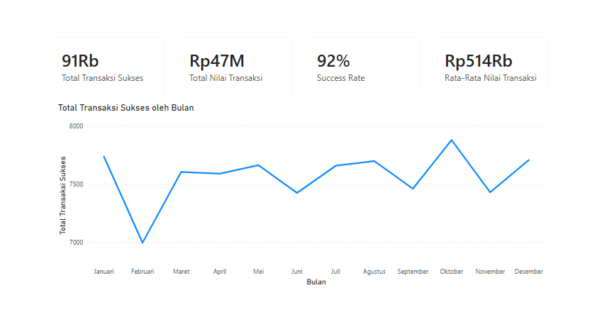
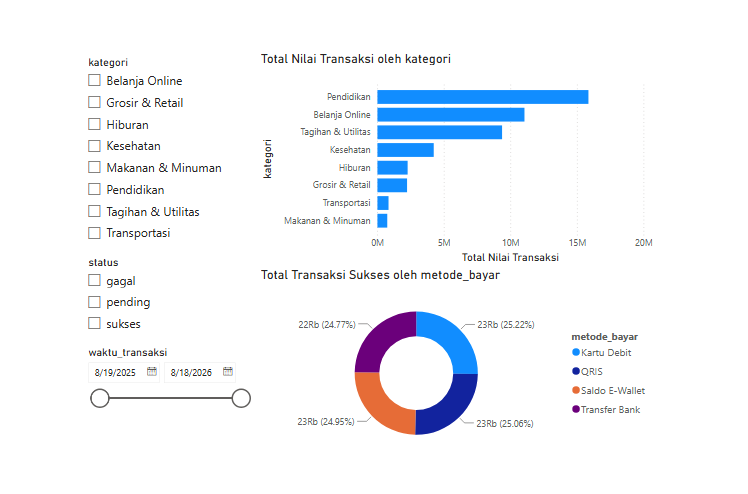
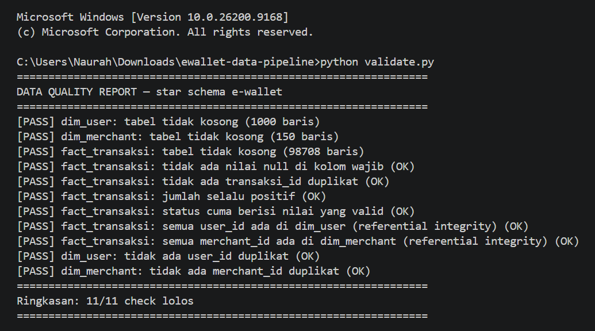

End-to-End Data Pipeline & Dashboard for E-Wallet Transactions
A self-built ETL pipeline and interactive Power BI dashboard on synthetic fintech transaction data, from raw ingestion to a validated star schema, scheduled to run automatically.

Click the preview above to view the full pipeline code and dashboard.pbix on GitHub.
What Is This Project?
After upgrading my house price recommendation project with a proper data pipeline, I wanted to build one from scratch, end-to-end, on a dataset closer to a fintech context. I generated a synthetic e-wallet transaction dataset (~100K rows across users, merchants, and transactions), deliberately seeded with realistic data problems, then built the full pipeline needed to turn it into something trustworthy enough to analyze.
The result covers the parts of data engineering that don't show up in a notebook: a proper warehouse schema, automated validation, scheduled orchestration, and a dashboard people other than me could actually read.
Tech Stack
Data You Can't Trust Yet Isn't Data You Can Analyze.
Raw transaction exports came with real-world problems baked in on purpose: duplicate rows, missing merchant references, negative amounts, and inconsistent status casing.
Without a warehouse schema, there was no reliable way to join transactions to users and merchants, or to guarantee every foreign key actually pointed somewhere valid.
Running the pipeline by hand meant it only ever reflected the data as of whenever I last remembered to run it, not something that could be trusted to stay current.
Raw Data to Star Schema
Transactions, users, and merchants land in raw staging tables exactly as generated, problems included. From there, a SQL transform step deduplicates and validates the data before loading it into a star schema: one fact table for transactions, referenced by two dimension tables.
Pipeline at a glance
- Synthetic data →
raw_*tables →dim_user/dim_merchant/fact_transaksiin PostgreSQL (Neon) - Deduplication via
ROW_NUMBER(), referential integrity enforced withFOREIGN KEYandCHECKconstraints - 11 automated data quality checks (nulls, duplicates, ranges, referential integrity) — 11/11 passing
- Orchestrated end-to-end with a Python runner, scheduled daily via Windows Task Scheduler, with logs kept per run
What The Pipeline Does
~100K transactions across 1,000 users and 150 merchants, generated with realistic amount ranges per merchant category and deliberately seeded data quality issues.
Deduplication and cleaning logic written in pure SQL using ROW_NUMBER() and CTEs, transforming raw tables into the final star schema in a single transactional script.
11 checks covering nulls, duplicates, value ranges, and referential integrity, run as part of every pipeline execution with a clear PASS/FAIL report.
A single Python runner chains load, transform, and validation, with per-stage timing and a persistent log file, scheduled daily through Windows Task Scheduler.
KPI cards, a monthly transaction trend, category-level breakdowns, and payment method distribution, all built on DAX measures connected live to the warehouse.
What the Pipeline Actually Cleaned
Of ~100,500 raw transaction rows, the pipeline detected and removed the following before anything reached the fact table:
| Issue | Rows | Handling |
|---|---|---|
| Duplicate rows | 500 | ROW_NUMBER() dedup |
| Missing merchant_id | 1,005 | Filtered (NOT NULL) |
| Negative amounts | 302 | Filtered (CHECK) |
| Final clean rows | 98,708 | 11/11 checks passed |
A Closer Look



Reflection
This was the first project I built with data engineering as the actual goal, not something bolted onto a model. Deliberately seeding the raw data with problems, then having to detect and justify removing each one, made data quality feel less like a checklist and more like a design decision with real trade-offs.
Setting up scheduling also taught me something I hadn't run into working solo before: a pipeline that only I remember to run isn't really automated. Watching a second log file appear on its own, triggered by Task Scheduler instead of by me, was a small but clarifying moment.